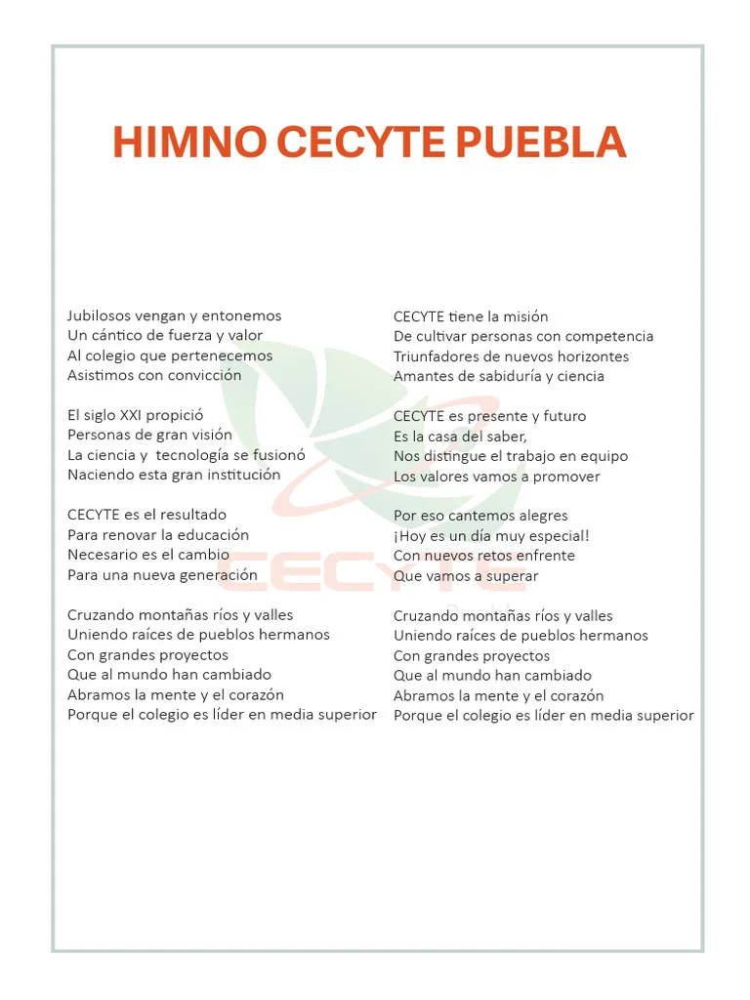

A continuacion se muestran los himnos que cantan todos los lunes en ceremonia
🎶 Himno Nacional Mexicano
Coro
Mexicanos, al grito de guerra
el acero aprestad y el bridón,
y retiemble en sus centros la tierra,
al sonoro rugir del cañón.
Estrofa I
Ciña ¡Oh patria! tus sienes de oliva
de la paz el arcángel divino,
que en el cielo tu eterno destino
por el dedo de Dios se escribió.
Mas si osare un extraño enemigo
profanar con su planta tu suelo,
piensa ¡Oh patria querida! que el cielo
un soldado en cada hijo te dio.
Estrofa II
¡Guerra, guerra sin tregua al que intente!
de la patria manchar los blasones,
¡guerra, guerra! los patrios pendones
en las olas de sangre empapad.
¡Guerra, guerra! en el monte, en el valle,
los cañones horrísonos truenen
y los ecos sonoros resuenen
con las voces de ¡Unión! ¡Libertad!
Estrofa III
Antes, patria, que inermes tus hijos
bajo el yugo su cuello dobleguen,
tus campiñas con sangre se rieguen,
sobre sangre se estampe su pie.
Y tus templos, palacios y torres
se derrumben con hórrido estruendo,
y sus ruinas existan diciendo:
de mil héroes la patria aquí fue fiel.
Estrofa IV
¡Patria! ¡Patria! tus hijos te juran
exhalar en tus aras su aliento,
si el clarín con su bélico acento
los convoca a lidiar con valor.
¡Para ti las guirnaldas de oliva!,
¡un recuerdo para ellos de gloria!,
¡un laurel para ti de victoria!,
¡un sepulcro para ellos de honor!
🎶 Himno al Estado de Puebla
Coro
Compatriotas: un himno entonemos
Con mil notas que lleguen al cielo.
Hoy la Patria bendita nos pide
Que entusiastas alcemos la voz.
En la patria, es mi Puebla el Estado
Que le hereda a sus hijos lealtad;
Cuna fue de valientes poblanos
Que le dieron la gloria inmortal.
Estrofa I
Hoy en Puebla se prende la antorcha
Del trabajo que marca el progreso,
Y el clarín hoy taladra el silencio
Y proclama una vida mejor.
El poblano sostiene el arado
Y ha olvidado el sangriento fusil.
Hoy en Puebla florecen los campos
Con destellos de un gran porvenir.
Coro
(Se repite)
Estrofa II
Zaragoza en un Mayo conquista
El laurel que le dio a la Nación;
Los Serdán con su acción glorifican
A la patria invencible de hoy.
El escudo de Puebla levanta
Las palabras que dicen al mundo
Que Justicia, Unión y Esperanza
Simbolizan amor fraternal.
Coro
(Se repite de nuevo)
Himno CECYTE

Regresar